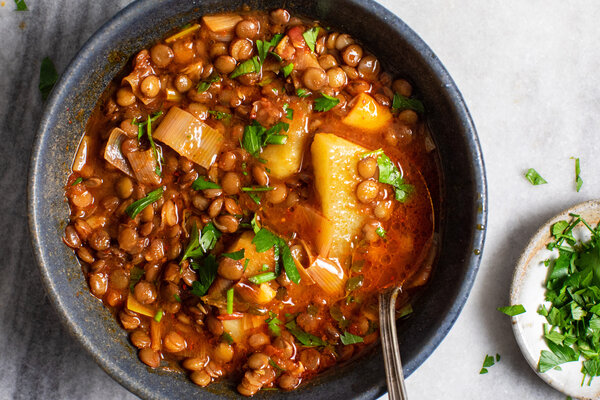

Lentil Stew

Description
Who doesn't love a hearty meal in the comfort of one's home especially when the cold starts? I love this recipe because it's easy, you get many portions in one go and it's filling and beyond tasty. The following recipe is a step-by-step detailed guide on how to make the best lentil stew.
The greatest advice I can give you is to prepare (meaning, chopping) everything in advance. Once you've done that, it's just a matter of mixing, adding, mixing, waiting and wait some more until is done. Remember that you can make it veggie by easily skipping some steps where meat is involved.
Ingredients
Yields 4 servings. Add more quantity of ingredients accordingly (i.e. 2 onions, 4 carrots, etc.) to double the portions.
- Various meats at choice: bacon, roast beef, chorizo
- 1 big onion
- 2 large carrots
- 2 big potatoes
- 2 celery ribs
- 4 large garlic cloves
- 2 tablespoons olive oil
- 1 glass of red wine
- 1 ½ tablespoons smoked paprika
- ½ teaspoon cumin
- 200 gr brown or green lentils
- 1 can of high-quality canned tomatoes
- 1 cube of vegetable broth
- 1 teaspoon of salt
- For garnish: fresh cilantro or parsley
Steps
- Finely dice the onion. Peel and finely chop the carrots and potatoes. Chop the celery into small pieces. Mince the garlic.
- Cut your chosen meats in cubes or stripes
- In a large pot with a bit of olive oil, cook all the meats together until done and leave on the side. DON'T USE ANOTHER POT, KEEP THE SAME TO RETAIN THE FLAVOR!
- Add the onion, carrot, celery and garlic and cook 3 to 4 minutes until just translucent.
- Add the meats back and add the glass of red wine. Be sure to let it steam until the alcohol has evaporated (smell it and if your nose doesn't itch, then you are good to go), approximately 2 minutes.
- Add the spices, mix well and add the canned tomatoes. Mix well again.
- Add the lentils and the broth. Be sure that the lentils are well covered. If the broth was not enough, add some hot (not boiled) water until fully covered.
- Wait until it boils and let it simmer in low heat for 35-45 minutes. Be sure to stir every 10-15 minutes. Check that the lentils are nice and squishy.
- Remove from the heat. Taste and season with additional salt and fresh ground pepper as necessary.
- Add some cilantro or parsley for a nice minty kick.